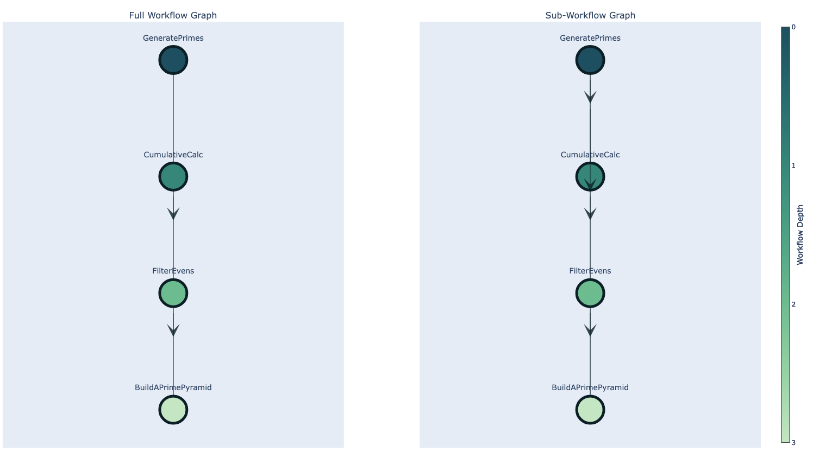

🤖 Usage¶
This project provides the framework to construct pipelines but does not offer hosting the logic of any pipelines themselves. This approach offers the benefit of making all components more modular, manageable and decoupled. Pipelines themselves are hosted in a separate repository.
The test_workflows_shared repository acts as a template and demonstrates how to structure a pipeline using CPG Flow.
The components required to build pipelines with CPG Flow:
Some .toml configuration file¶
This file contains the configuration settings to your pipeline. This file allows the pipeline developer to define settings such as:
- what stages will be run or skipped
- what dataset to use
- what access level to use
- any input cohorts
- sequencing type
[workflow]
dataset = 'fewgenomes'
# Note: for fewgenomes and sandbox mentioning datasets by name is not a security risk
# DO NOT DO THIS FOR OTHER DATASETS
# set this to specify the output version used by
# workflow.output_version, target.tmp|web_prefix, etc.
output_version = 'ABC123'
input_cohorts = ['COH2142']
access_level = 'test'
# Force stage rerun
force_stages = [
'GeneratePrimes', # the first stage
'CumulativeCalc', # the second stage
'FilterEvens', # the third stage
'BuildAPrimePyramid', # the last stage
]
# Show a workflow graph locally or save to web bucket.
# Default is false, set to true to show the workflow graph.
show_workflow = true
# ...
For a full list of supported config options with documentation, see defaults.toml
Info
This .toml file may be named anything, as long as it is correctly passed to the analysis-runner invocation. The analysis-runner supplies its own default settings, and combines it with the settings from this file, before submitting a job.
An entrypoint for the pipeline¶
Ideally a file like main.py that would be the entrypoint for the pipeline, storing the workflow definition as a list of stages, and then running said workflow:
import os
from pathlib import Path
from cpg_flow.workflow import run_workflow
from cpg_utils.config import set_config_paths
from stages import BuildAPrimePyramid, CumulativeCalc, FilterEvens, GeneratePrimes
CONFIG_FILE = str(Path(__file__).parent / '<YOUR_CONFIG>.toml')
def run_cpg_flow(dry_run=False):
#See the 'Key Considerations and Limitations' section for notes on the definition of the `workflow` variable.
# This represents the flow of the DAG
workflow = [GeneratePrimes, CumulativeCalc, FilterEvens, BuildAPrimePyramid]
config_paths = os.environ['CPG_CONFIG_PATH'].split(',')
# Inserting after the "defaults" config, but before user configs:
set_config_paths(config_paths[:1] + [CONFIG_FILE] + config_paths[1:])
run_workflow(stages=workflow, dry_run=dry_run)
if __name__ == '__main__':
run_cpg_flow()
The workflow definition here forms a DAG (Directed Acyclic Graph) structure.

Tip
To generate a plot of the DAG, show_workflow = True should be included in the config. The DAG plot generated from the pipeline definition is available in the logs via the job URL. To find the link to the plot, search the Logs section for the string: "INFO - Link to the graph:".
Warning
There are some key considerations and limitations to take into account when designing the DAG:
The Stage definitions¶
A Stage represents a node in the DAG. The stages can be abstracted from either a DatasetStage, CohortStage, MultiCohortStage, or a SequencingGroupStage.
The stage definition should use the @stage decorator to optionally set:
- dependent stages (this is used to build the DAG)
- analysis keys (this determines what outputs should be written to metamist)
- the analysis type (this determines the analysis-type to be written to metamist)
All stages require an expected_outputs class method definition, that sets the expected output path location for a given Target such as a SequencingGroup, Dataset, Cohort, or MultiCohort.
Also required, is a queue_jobs class method definition that calls pipeline jobs, and stores the results of these jobs to the paths defined in expected_outputs.
Tip
It is good practice to separate the Stage definitions into their own files, to keep the code compact, and manageable.
from cpg_flow.stage import SequencingGroupStage, StageInput, StageOutput, stage
from cpg_flow.targets.sequencing_group import SequencingGroup
from jobs import cumulative_calc
WORKFLOW_FOLDER = 'prime_pyramid'
# ...
# This stage depends on the `GeneratePrimes` stage, and requires outputs from that stage.
@stage(required_stages=[GeneratePrimes], analysis_keys=['cumulative'], analysis_type='custom')
class CumulativeCalc(SequencingGroupStage):
def expected_outputs(self, sequencing_group: SequencingGroup):
return {
'cumulative': sequencing_group.dataset.prefix() / WORKFLOW_FOLDER / f'{sequencing_group.id}_cumulative.txt',
}
def queue_jobs(self, sequencing_group: SequencingGroup, inputs: StageInput) -> StageOutput | None:
input_txt = inputs.as_path(sequencing_group, GeneratePrimes, 'primes')
b = get_batch()
cumulative_calc_output_path = str(self.expected_outputs(sequencing_group).get('cumulative', ''))
# We define a job instance from the `cumulative_calc` job definition.
job_cumulative_calc = cumulative_calc(b, sequencing_group, input_txt, cumulative_calc_output_path)
jobs = [job_cumulative_calc]
return self.make_outputs(
sequencing_group,
data=self.expected_outputs(sequencing_group),
jobs=jobs,
)
# ...
Warning
There is a key consideration to take into account when writing the stages:
jobs.py or equivalent file for Job definitions¶
Every Stage requires a collection of jobs that will be executed within.
Tip
It is good practice to store these job definitions in their own files, as the definitions can often get long.
from cpg_flow.targets.sequencing_group import SequencingGroup
from hailtop.batch import Batch
from hailtop.batch.job import Job
def cumulative_calc(
b: Batch,
sequencing_group: SequencingGroup,
input_file_path: str,
output_file_path: str,
) -> list[Job]:
title = f'Cumulative Calc: {sequencing_group.id}'
job = b.new_job(name=title)
primes_path = b.read_input(input_file_path)
cmd = f"""
primes=($(cat {primes_path}))
csum=0
cumulative=()
for prime in "${{primes[@]}}"; do
((csum += prime))
cumulative+=("$csum")
done
echo "${{cumulative[@]}}" > {job.cumulative}
"""
job.command(cmd)
print('-----PRINT CUMULATIVE-----')
print(output_file_path)
b.write_output(job.cumulative, output_file_path)
return job
Once these required components are written, the pipeline is ready to be executed against this framework.
Running the pipeline¶
All pipelines can only be exclusively run using the analysis-runner package which grants the user appropriate permissions based on the dataset and access level defined above. analysis-runner requires a repo, commit and the entrypoint file, and then runs the code inside a "driver" image on Hail Batch, logging the invocation to metamist for future audit and reproducibility.
Therefore, the pipeline code needs to be pushed to a remote version control system, for analysis-runner to be able to pull it for execution. A job can then be submitted:
analysis-runner \
--image "australia-southeast1-docker.pkg.dev/cpg-common/images/cpg_flow:1.0.0" \
--dataset "fewgenomes" \
--description "cpg-flow_test" \
--access-level "test" \
--output-dir "cpg-flow_test" \
--config "<YOUR_CONFIG>.toml" \
workflow.py
Success
If the job is successfully created, the analysis-runner output will include a job URL. This driver job will trigger additional jobs, which can be monitored via the /batches page on Hail. Monitoring these jobs helps verify that the workflow ran successfully. When all expected jobs complete without errors, this confirms the successful execution of the workflow and indicates that the cpg_flow package is functioning as intended.
Info
See the Docker section for instruction on pulling valid images releases.